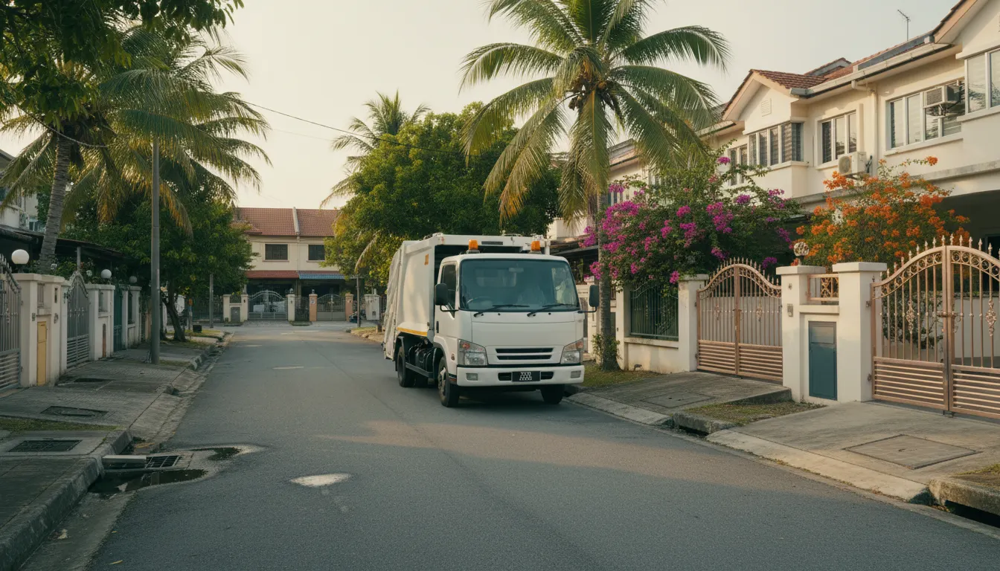
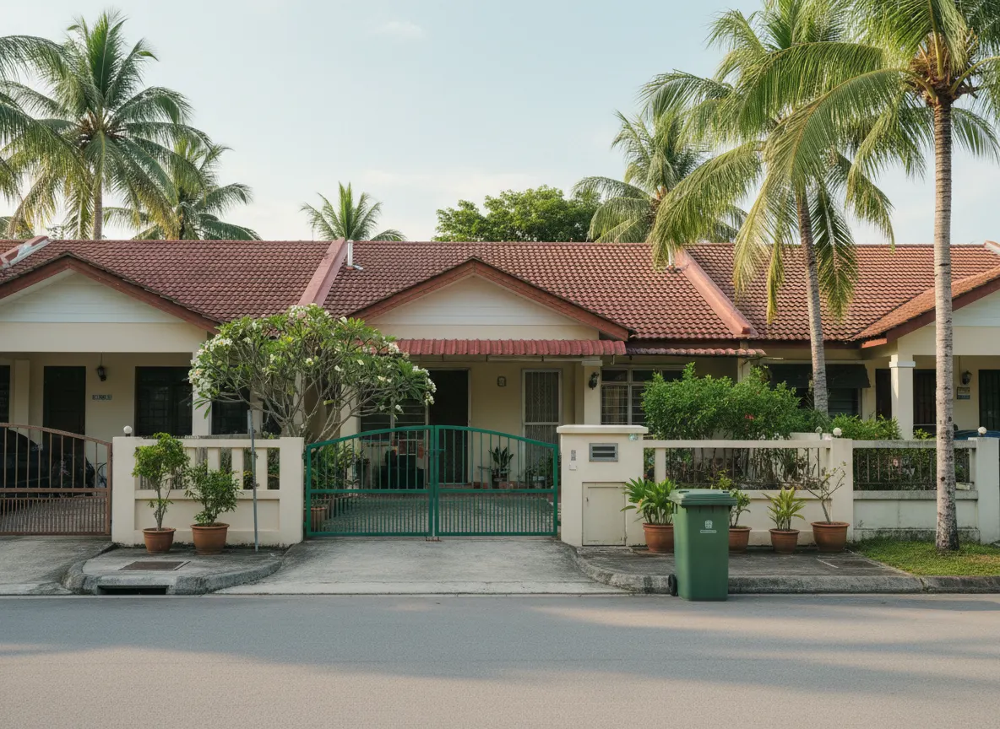
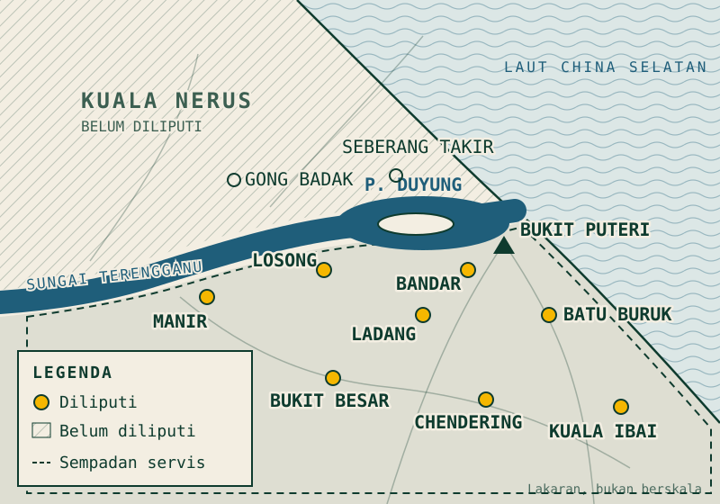
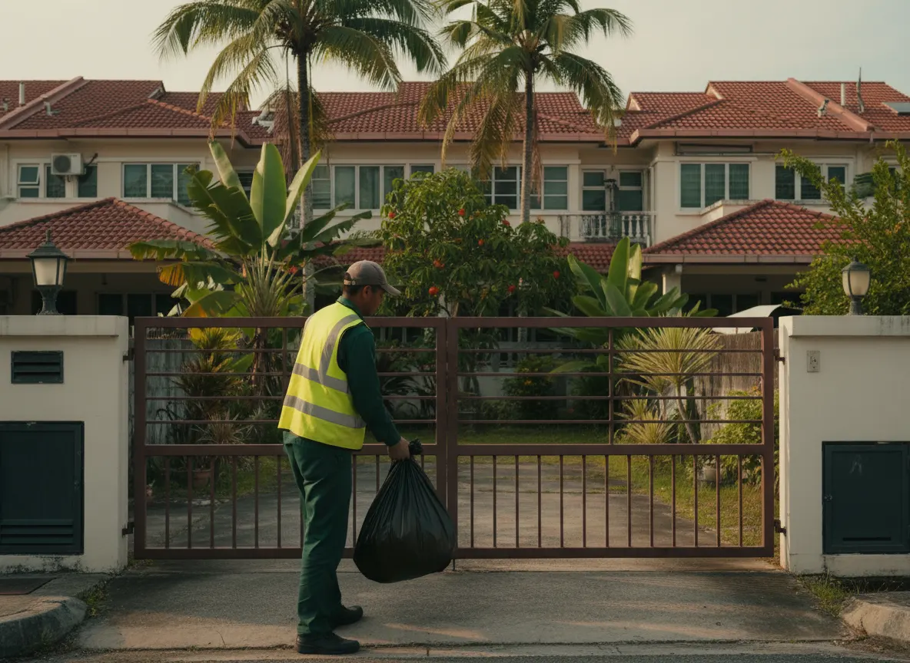

Kutipan sampah rumah · Kuala Terengganu
Sampoh anda, kite kutip.
Ikat beg, letak depan pagar. Pasukan kami datang ambil dua kali seminggu, jadi tong tak sempat penuh dan bau tak sempat naik.
- Isnin & Khamis
- RM69/bulan
- Bayar tunai

001 · Masalahnya
Tong penuh, lori tak sampai?
Kalau tinggal di taman perumahan atau kampung di KT, tiga situasi ini mesti dah biasa.
002 · Jadual kutipan
Isnin ngan Khamis, kite sampai.
- Isnin: hari kutipan
- Selasa: tiada kutipan
- Rabu: tiada kutipan
- Khamis: hari kutipan
- Jumaat: tiada kutipan
- Sabtu: tiada kutipan
- Ahad: tiada kutipan
Setiap Isnin dan Khamis, waktu pagi. Kotak bergaris putus-putus pada papan ialah hari ini.
003 · Caranya
Senang je.
Tiga langkah.

-
Langkah 01 · Daftar
Isi borang atau mesej kami
Dua minit sahaja. Nama, nombor telefon dan alamat rumah.
-
Langkah 02 · Sahkan
Kami hubungi & sahkan alamat
Kami telefon atau WhatsApp dalam satu hari bekerja untuk sahkan lokasi dan tarikh kutipan pertama.
-
Langkah 03 · Kutip
Kami kutip, anda bayar tunai bulanan
Letak beg depan pagar setiap Isnin dan Khamis. Bayaran tunai sebulan sekali, resit diberi.
004 · Apa yang kami kutip
Sampah rumah, dalam beg yang diikat.
Kami kutip
- Sisa dapur
- Plastik & bungkusan
- Kertas & kotak kecil
- Lampin pakai buang
- Sampah sapuan rumah
- Tin & botol
Kami tak kutip
- Sisa binaan
- Sisa toksik (cat, minyak hitam, bateri)
- Perabot besar & tilam
- Sisa kebun pukal
- Sisa klinikal
Had: 5 beg setiap kutipan · Lebih daripada itu? Mesej kami dahulu.
005 · Harga
Satu pakej. Tak payah pening.
Langganan Bersih Kite
RM69/bulan
≈ RM2.30 sehari
- Kutipan 2 kali seminggu, Isnin & Khamis
- Ambil terus dari depan pagar
- Mesej WhatsApp sebelum lori sampai
- Bayar tunai, resit diberi setiap bulan
- Tiada kontrak, boleh berhenti bila-bila masa
- Tiada yuran pendaftaran
Bayar tunai setiap bulan kepada pekerja Bersih Kite. Tiada kad, tiada auto-debit.
006 · Kawasan liputan
Rumoh anda kak mane?
Kami mula dengan daerah Kuala Terengganu, di selatan Sungai Terengganu. Kuala Nerus belum lagi. Kalau rumah anda di sana, mesej kami. Nanti kami beritahu bila servis sampai ke sana.

Semak poskod anda
- Bandar
- Ladang
- Batu Buruk
- Chendering
- Kuala Ibai
- Bukit Besar
- Manir
- Losong
- Kubang Parit
- Cabang Tiga
- Gong Kapas
- Gelugor Kedai

007 · Janji Bersih Kite
Kite janji, kite tunai.
- 01
Terlepas kutipan? Kami datang semula dalam 24 jam.
Mesej kami dan kami datang semula, tanpa caj.
- 02
Pekerja beruniform
Baju hijau, jaket kuning. Anda tahu siapa yang datang ke depan rumah.
- 03
Mesej sebelum sampai
Notifikasi WhatsApp bila lori dah dekat. Kalau jadual berubah, anda orang pertama yang tahu.
- 04
Resit untuk setiap bayaran
Bayar tunai, terima resit. Senang nak semak.
Bayaran
Pada kutipan pertama setiap bulan, kepada pekerja Bersih Kite yang bertugas. Anda terima resit pada masa itu. Kalau tiada orang di rumah, mesej kami dan kita atur masa lain.
Tak ada. Tak ada kontrak, deposit atau yuran pendaftaran. Anda bayar RM69 untuk bulan yang anda guna sahaja.
Mesej kami di WhatsApp bila-bila masa. Langganan tamat pada hujung bulan yang sudah dibayar. Tiada caj berhenti.
Jadual
Kalau Isnin atau Khamis jatuh pada cuti umum, kami maklumkan tarikh ganti melalui WhatsApp sekurang-kurangnya sehari sebelum. Untuk Hari Raya, kami hantar jadual khas seminggu sebelum raya.
Beritahu kami tarikhnya. Kalau anda tiada sepanjang bulan, langganan boleh ditangguhkan dan bulan itu tak perlu dibayar.
Anggaran 7:00 – 11:00 pagi, ikut laluan. Anda akan terima mesej WhatsApp kira-kira 30 minit sebelum lori sampai.
Sampah
Di depan pagar, sama ada dalam tong atau di tepi pagar. Pastikan beg diikat ketat supaya tak dikoyak kucing atau anjing. Kalau anda ada tong bertutup, lebih baik.
Bersih Kite ialah servis tambahan, bukan pengganti. MBKT masih kutip seperti biasa. Kami pula ambil beg terus dari depan pagar rumah anda pada hari yang tetap, supaya tong rumah tak melimpah sementara menunggu lori majlis.
Boleh. Masa sahkan alamat, kami tanya cara masuk dan berbincang dengan pengawal atau persatuan penduduk. Kalau lori tak dibenarkan masuk, kami maklumkan sebelum anda bayar.
Boleh. Mesej kami beberapa hari lebih awal dengan anggaran jumlah beg. Kalau beg melebihi had, kami beritahu cajnya sebelum kutip.
Jom, daftar.
Isi borang ini dan tekan hantar. WhatsApp akan terbuka dengan mesej yang sudah siap. Anda cuma perlu tekan hantar sekali lagi.
- +60 10-000 0000 (buka tab baharu)
- Waktu operasi
- Isnin – Sabtu, 9:00 pagi – 6:00 petang